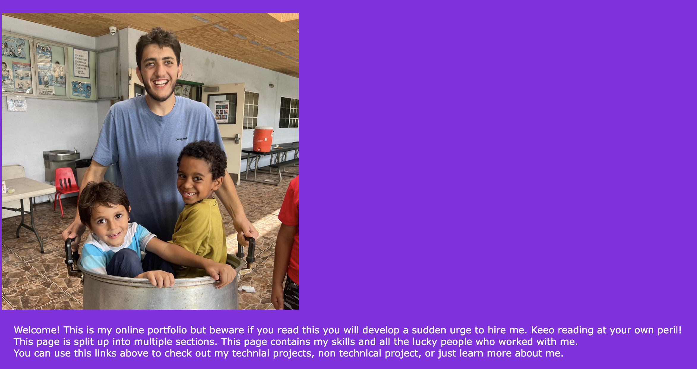

Techinal projects:
GetFit(Fitness app)

Personal project(Java)
Created an android application that allows users to track their food intake and workout routine.
Implemented a database that provides users with foods and exercises also allowing users to upload new foods and exercises
Implemented a system that provides users data and graphs based on the data provided by the users to help with their fitness goals
ichla.org

Work project(HTML)
Built a non-profit organization's website from concept to product using HTML, CSS, and JavaScript.
Created optimizations for website features such as a calendar view of programs and a centralized system to sign up
and pay for events based on UX metrics collected from website users.
TunnelMan

School project(C++)
Created a real-time strategy game where users optimize paths to reach higher, tough levels, with an interactive 2D UI.
Implemented AI by testing different graph-search algorithms to train opposition to beat users at higher levels.
Utilized Object Oriented Programming principles and vector-based structure to ensure efficient usage of memory.
This website!

School project(HTML)
Created a portfolio that flexes all my skills to potential employers
Used HTML along with CSS to make a websites who's colors clash to much
Probably getting an A on this assignment